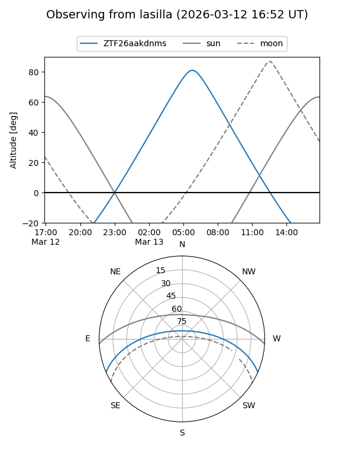
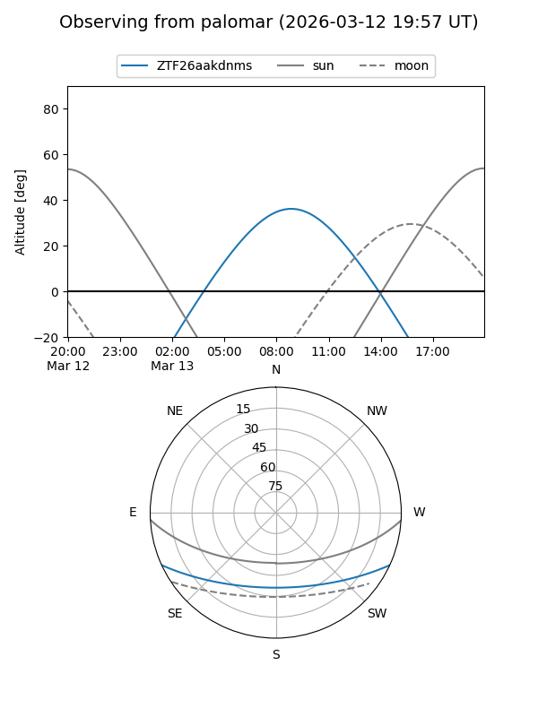

ZTF26aakdnms
Target ZTF26aakdnms at 2026-03-13 08:05
Aliases and brokers:
FINK: link
Lasair: link
ALeRCE: link
alt names
ZTF26aakdnms (ztf,fink_ztf)
Coordinates:
equatorial (ra, dec) = 186.5114,-20.30817
equatorial (HMS+DMS) = 12:26:02.74,-20:18:29.42
galactic (l, b) = (294.8897,+42.16672)
Flags:
Photometry:
last ztfg=16.98
1 ztfg detections
Lightcurve
Visibility


Additional plots